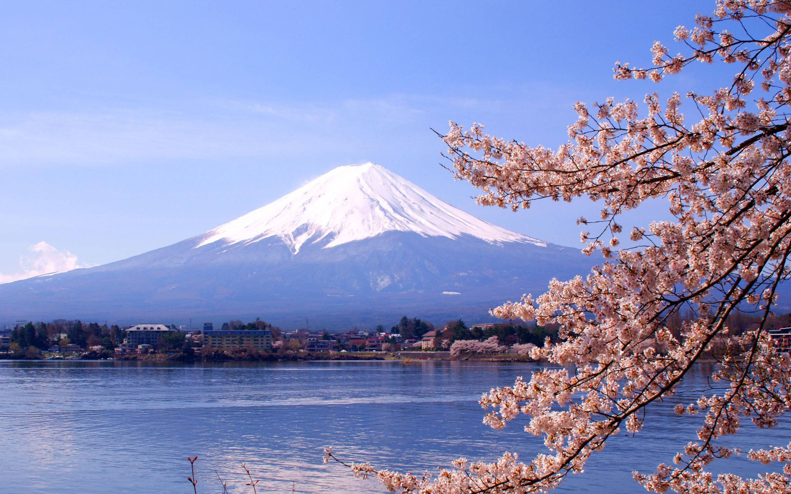
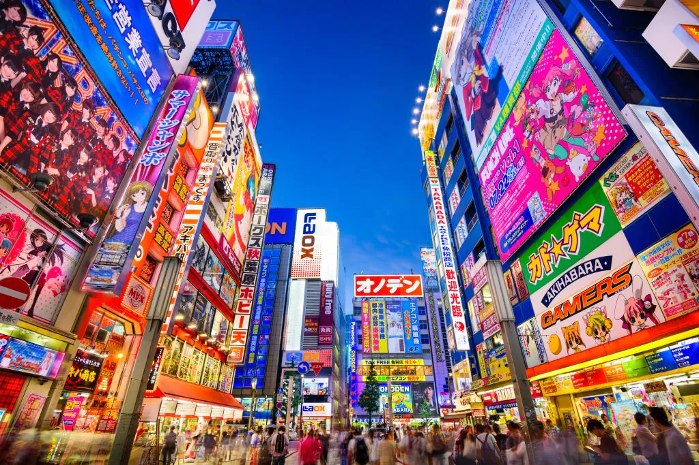
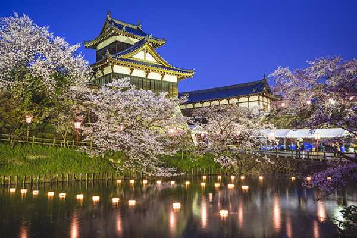
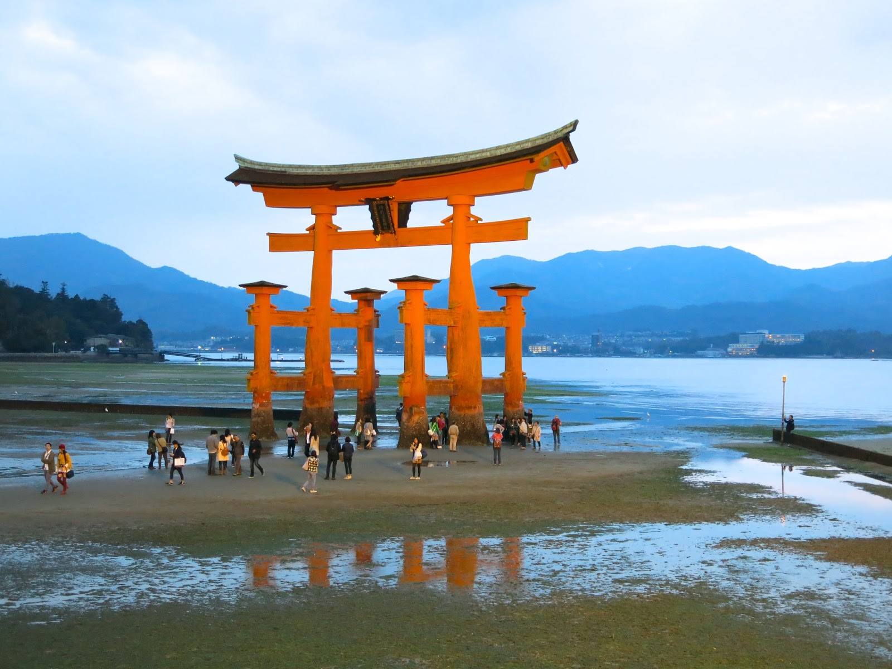

PONTOS TURÍSTICOS
Monte Fuji
O ícone nacional do Japão, o Monte Fuji é uma montanha vulcânica majestosa e um destino popular para escaladas e admiradores da natureza. Sua simetria perfeita faz dele um símbolo de beleza e espiritualidade.
Templo Kinkaku-ji
Este famoso templo budista é conhecido por sua estrutura coberta de folhas de ouro e está situado em um cenário sereno com belos jardins e lagos.

Castelo de Himeji
Considerado um dos castelos mais bem preservados do Japão, o Castelo de Himeji é uma maravilha arquitetônica e um Patrimônio Mundial da Humanidade, famoso por sua grandiosidade e beleza.

Tóquio
A capital japonesa é uma mistura vibrante de modernidade e tradição, com bairros como Shibuya e Shinjuku oferecendo energia urbana e cultura pop, e o distrito de Asakusa abrigando o icônico Templo Senso-ji.
Nara
Famosa por seus parques e templos históricos, como o Templo Todai-ji, que abriga uma enorme estátua de Buda, Nara é um destino imperdível para quem busca uma experiência mais tranquila e cultural.
Ilha de Miyajima
Conhecida pelo famoso Torii flutuante do Santuário Itsukushima, Miyajima é uma ilha sagrada no mar de Seto, com belos cenários naturais e templos antigos.
